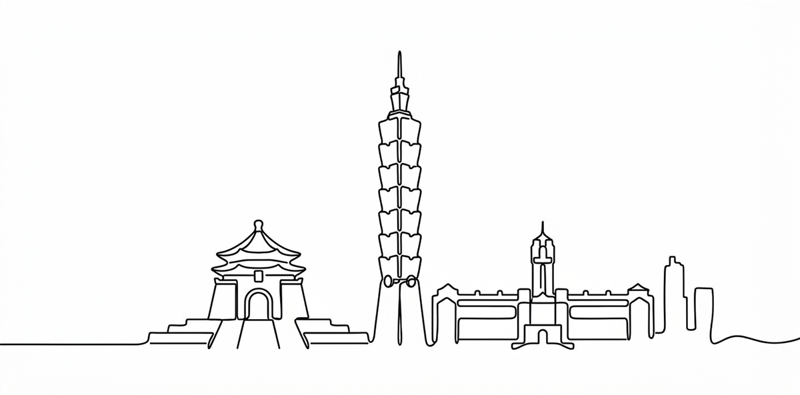
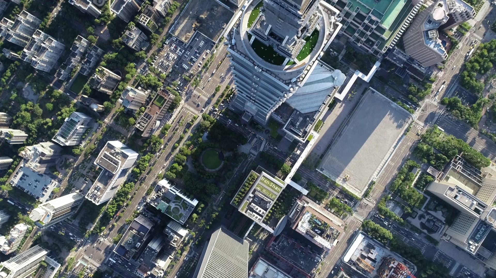
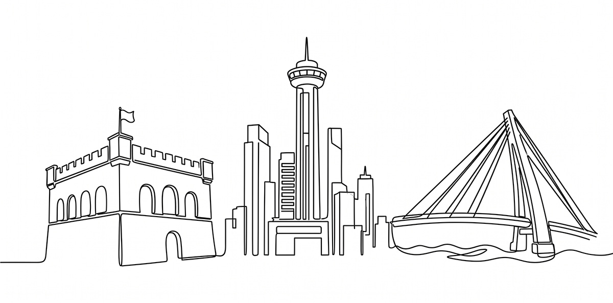
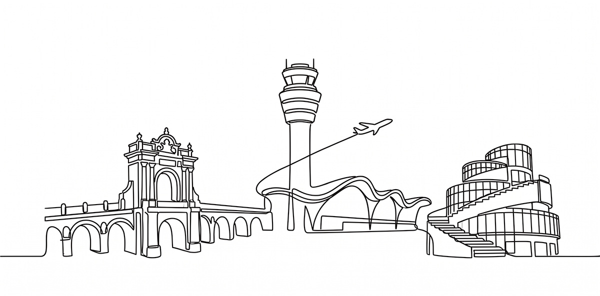
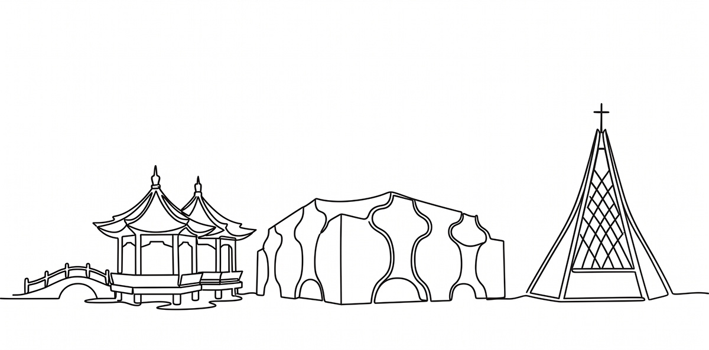
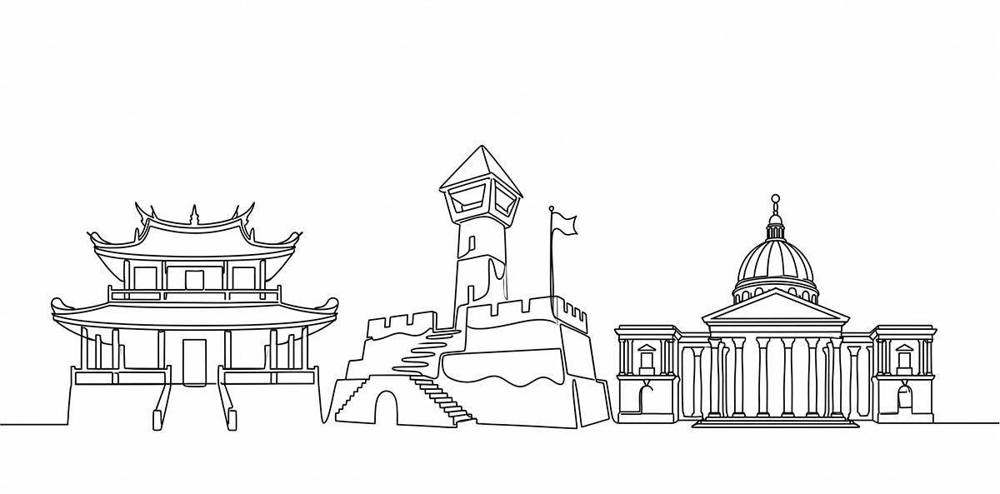
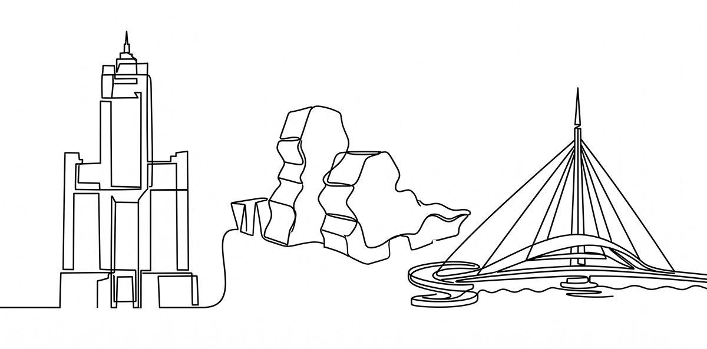

台北市很難用一個答案說服所有人，交通、居住、產業、綠地，每一題背後都還會衍生另一題；一個政策看起來解決了問題，也可能同時帶來新的取捨，這座城市不只需要答案，更需要知道問題到底該怎麼被理解。
現任市長蔣萬安在框架裡不出錯，沈伯洋在框架中看得見缺口，台北市該交給誰？需要的是把問題穩穩地整理成答案，還是不受框架拘束，找出缺口補起來？
台北市交給誰？
給12個候選人的城市考題

有人去魚塭、有人走上學的路、有人進芒果加工廠、有人帶我看手機裡的地圖、有人在辦公室拉白板、有人帶我去有桌球桌和茶桌的祕密基地、有人做豆腐、也有人吃冰、有人買童書、有人用AI、有人做深蹲機、有人超慢跑⋯⋯
為何要讓這12個想治理城市的人被現場考一次？TVBS政治實境網路節目《佳頴Ｔ政步》主持人呂佳頴、編導柯勝雄認為，「城市」不是交給一張臉，不是交給一句口號，也不是交給一份漂亮政見；「城市」該被交付的是一個人的判斷、是性格和反應，還有他們遇到問題時，是閃過去，還是蹲下來處理。
因此有了「六都交給誰」專題，那該如何呈現呢？我們決定把人放回現場。現場很公平，它不替政治人物修圖，也不幫任何人加台詞。一個人怎麼看、怎麼躲、怎麼笑、怎麼出手，性格是藏不住的。請仔細看喔，候選人的治理性格藏在反應裡，藏在細節裡，藏在不順利的那一刻，藏在他如何面對人、面對問題、面對權力。具體來說，我們想做的是一份2026年的城市人物觀察：跟著一個人，去一個地方，看見一種性格，最後留下一道城市考題。
這12道城市考題，是六都候選人在2026年必須回答的問題，《佳頴Ｔ政步》找到12位候選人，請他們親自回答，對照著看，或許能幫你決定把城市交給誰！

台北市很難用一個答案說服所有人，交通、居住、產業、綠地，每一題背後都還會衍生另一題；一個政策看起來解決了問題，也可能同時帶來新的取捨，這座城市不只需要答案，更需要知道問題到底該怎麼被理解。
現任市長蔣萬安在框架裡不出錯，沈伯洋在框架中看得見缺口，台北市該交給誰？需要的是把問題穩穩地整理成答案，還是不受框架拘束，找出缺口補起來？
台北市交給誰？

新北市很大，大到不像城市，反而像很多座生活圈被縫在一起的地方。有人每天通勤進台北，有人住在重劃區，有人守著老街、工業區、市場、山海邊界，也有人希望看病、停車、上班、接小孩不要卡關。
新北市該交給誰？要先弄清楚誰知道哪裡壞了？誰能說出新北修好後長出什麼樣子？兩位候選人，李四川像城市維修師，蘇巧慧則是想把新北變得更明亮，新北市需要修補，還是要更新？
新北市交給誰？

用白話形容桃園市，它長大了而且長得很快：國門、航空城、工業區、物流、移工、客庄、沿海、年輕家庭，全都疊在一起。它不是單一面貌的城市，而是一座一直被推著往前走的城市。長得快，是機會；但長得快，也容易混亂。
桃園市這一題，不只比較誰比較穩，誰比較會講改變，而是誰能整理一座快速長大的城市？誰能讓管理不只是控制，讓制度不只是正確，而是真的變成城市動能？
桃園市交給誰？

台中市向來都把實力藏起來，一台健身器材、一台自行車、一間豆腐工廠⋯⋯背後都可能連著工具機、精密製造、傳產升級和世界市場。台中市也不只是產業地圖，它有山線、海線、屯區、市中心；有工廠，也有市場；有供應鏈，也有一碗炒麵加豬血湯。
台中市很有意思。江啟臣從高處看系統，怕看不見人。何欣純從地方往上走，怕走不成全局。台中市要問的是：看懂產業的江啟臣能不能看見生活？地方跑得深的何欣純能不能站得夠高？
台中市交給誰？

台南市是一座很有記憶的城市。它有廟口、市場、老城、農漁村、科技園區，也有長期執政留下的信任、疲乏、利益和怨氣。在台南市，改變不是一句口號；延續也不是一張保證書，所以台南這一題，不只是藍綠攻防。
台南市要問的是：外部攻城的謝龍介能不能把政治戰鬥變成城市治理？內部突圍的陳亭妃，能不能把競爭之後的裂縫重新縫起來？謝龍介擅長把政治講到人聽得懂，陳亭妃從最激烈的縫隙裡殺出來。台南市需要改變，還是縫合？
台南市交給誰？

從工業城市到演唱會經濟，高雄市轉型之路已走過很長一段，高雄的城市版圖，從港口、重工業，一路延伸到台積電、半導體、海線農漁業與科技廊帶。高雄市不是單一的政績表，它有轉型的光，也有轉型後還沒被照到的地方。
所以高雄這一題，不只是誰接得住，也要問：誰能打破既定印象？誰又能接下長期執政的下一棒，卻不只是延續？柯志恩把真實反應留在鏡頭前；賴瑞隆站在接力區，想讓下一棒有重量。高雄市需要的是打破印象，還是穩定接棒？
高雄市交給誰？
採訪後記
該怎麼寫這次的採訪後記呢？應該就是——脫層皮吧！這是抱怨嗎？不全然。完成六都12個候選人的現場深度採訪，當然有成就感，但如果只說成就感，又太矯情。
過程明明痛苦萬分，忙著剪影音、寫文章，每個禮拜完成一集，原本還希望一個縣市兩兩一組出稿上片，讓大家看完這一個，再看那一個，比較好判斷。
但這件事最難的從來不是我想怎麼排，是12個人的時間、意願，以及願意讓我們走進去多少！
12個人的試卷各不相同
我沒有設定12個人一定要拍到什麼，沒有規定每個人都去市場、都進辦公室、都坐下來接受一樣的訪問。反而是從他的政策、生活、習慣裡，慢慢找一個切口。有人去魚塭、有人走上學的路、有人進芒果加工廠、有人帶我看手機裡的地圖、有人在辦公室拉白板、有人帶我去放著桌球桌和茶桌的祕密基地⋯⋯
「人在自己熟悉的地方，做自己平常會做的事，才比較容易看到真實的樣子。」我這樣覺得。一件事情突然來了，他第一個反應是什麼？做不好，會不會不耐煩？被問到不想答的，怎麼閃？和身邊的人怎麼說話？那些一霎那的反應，還有彼此之間的互動，很難全部演好。
改時間、不要問、緩一下啦……
現場會露餡，也會讓人被重新理解。但現實沒那麼浪漫。「佳頴，颱風來了，要改時間。」「最近發生了一些事，緩一下啦。」「妳要問這個喔？不要啦……」總之，什麼理由都有。
我很想翻臉，但翻臉無濟於事，我也很想拍桌，但拍完桌，大概只會更難拍。那就沉住氣，慢慢磨，因為每個人都有他的為難。真的走進去之後，有時候也會知道：喔，原來現在的他，的確有這個處境。
理解他的為難，不代表放棄要問的問題，只是知道，有些門要慢一點才打得開。可是每個禮拜還是得上片，12個人如果拖到支離破碎，還能叫系列嗎？
最後，六都沒有全部照著我原本想像的「兩兩相連」（兩位候選人成對推出）。甚至有一都，兩個人硬是被拆開，因為受訪者時間不是我能控制的，但至少12周裡，我們把12個人都完成了。
幸好不是同一張考卷
有人說為什麼不要12個人同一張考卷，做到最後，我深深覺得幸好不是同一張考卷，不是套用同一套模組。因為不是要比誰比較會回答同一道題，而是這個人為什麼會長成今天這個樣子？
他怎麼看事情？碰到問題時，腦袋第一個轉的是什麼？什麼事情讓他興奮？什麼事情讓他遲疑？他怎麼理解人，又準備怎麼使用權力？
看完這一個，再看下一個。有時候真的會冒出一句：喔，原來他是這樣的人。這就是我們花12周一個一個走進現場的原因。不是替你選，也不是替誰證明他比較好，而是把12個人盡可能放回真實的現場裡，讓你先看，然後自己判斷：我的城市究竟要交給誰？
12個人全部做完的那一天，我們真的是「脫了一層皮」，但看著這12個人終於排在一起。嗯～這層皮，脫得值得！
資深製作人・《佳頴Ｔ政步》主持人
資深攝影記者・《佳頴Ｔ政步》編導
部分圖片授權｜候選人競辦提供・取自候選人臉書
新聞部
副總經理 王結玲
議題研究中心／呂佳頴
採訪中心攝影組／柯勝雄
網路新聞中心／楊致中・談雍雍・吳家瑜
數位事業部
內容策展組／廖玉貞・彭嘉儀・林佳瑤・李佳綺
© TVBS Media Inc. All Rights Reserved.｜聯利媒體股份有限公司